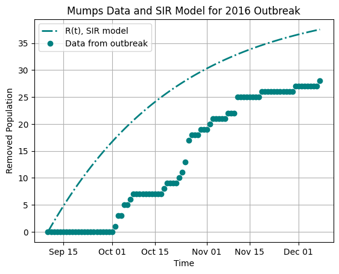
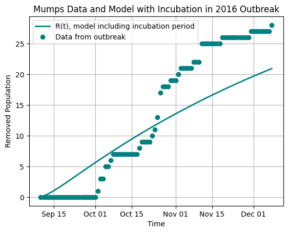
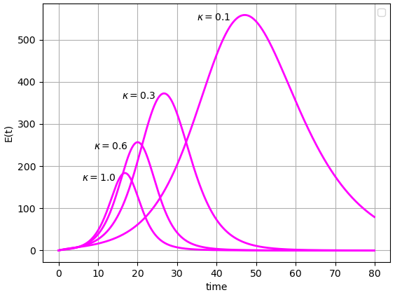

Introduce the SEIR model, where E stands for Exposed-and-incubating, meaning people in the E compartment have already contracted an illness but have not yet become infectious to others.
Learn to make the timelines of models more realistic by incorporating disease incubation periods.
Gain practice combining multiple variations, such as both vaccines and incubation periods, into a single model of disease spread.
As we continue to build modeling skills, two goals frequently motivate us. One goal is to improve a model’s fit to data (within reason, as we discuss more in later chapters). A second goal is to be able to create models that incorporate the dynamics of how a disease spreads in a population. It turns out that including a disease’s incubation period can help to address both these goals.
In this chapter, we experiment with the incubation period of a disease. Early on, we develop an understanding of how to build the incubation period into a model. Throughout, we devote attention to when and why we might want to include the incubation period in a model... or not include it.
To start, consider in Exploration 7.1 an outbreak of mumps, which can have an incubation period of two weeks or more.
Exploration7.1.Considering an Incubation Period.
The graph below shows data from a mumps outbreak at Bates College in the fall semester of 2016. Specifically, the data indicate numbers of students who have had mumps in this outbreak, counting them when they cease to be sick, to give values corresponding to the Removed compartment of a model. The curve displayed on the graph is the curve for the Removed compartment population in a typical SIR model that starts at the time when the first student would likely have first caught the mumps virus.

Figure7.1.Data, and an SIR model solution, for the Removed students (those who have recovered from mumps) in a campus outbreak
(a)
Use Figure 7.1 to respond to the following questions.
In what ways does the SIR model’s Removed curve do well at representing the values shown by the data points?
In what ways does the SIR model’s Removed curve do less well at representing the values shown by the data points?
(b)
Now suppose we build a second model. In this model, we account for the lengthy incubation period of mumps, which can be two weeks or more. The solution curve for the Removed compartment of this model is shown in Figure 7.1 alongside the same mumps data set described earlier in this Exploration.

Figure7.2.Data, and a model solution that includes an incubation period, for the Removed students (those who have recovered from mumps) in a campus outbreak
In what ways does the Removed curve do well at representing the values shown by the data points, in this model that includes an incubation period?
In what ways does the Removed curve do less well at representing the values shown by the data points, in this model that includes an incubation period?
Consider how this model with incubation period fits the data points, and consider how the SIR model at the start of this Exploration fits the data points. Compare your observations of the two models and how they fit the data points. You can describe advantages and disadvantages of each model without selecting either as your preferred model, or you can select one model as fitting better, explaining how you made your selection.
Section7.1Including an Incubation Period: The SEIR Model
We introduce here the SEIR model. The new compartment, E, stands for Exposed-and-incubating. The population \(E(t)\) therefore represents people who have contracted an illness, but who are not yet infectious. As the name “SEIR” suggests, this model has four compartments.
Now that we have worked with the SI and SIR models, you may well have ideas in mind for how the SEIR model should look. Try these in Activity 7.2.
Activity7.2.
How do you believe the SEIR model should appear? Demonstrate your ideas in the following ways:
Draw the SEIR model as a compartmental diagram. Carefully label each compartment and each arrow. Do not include vaccination in this model.
Write the differential equations of the SEIR model. Do not include vaccination.
Compare the compartmental diagram you drew with the differential equations you wrote. Are they compatible with each other? That is, do they describe the same model, with the same flow of people through compartments?
Answer.
One possible compartmental diagram appears below.
Figure7.3.Compartmental diagram of a model of HIV/AIDS, using descriptions instead of formulas for each arrow
One key aspect of this diagram is that the term \(\beta SI\) appears on the arrow from \(S\) to \(E\text{.}\) In the SIR model, the arrow from \(S\) to \(I\) involved exactly the compartments at its beginning and end, but with the SEIR model, there is a different pattern.
Notice the arrow labeled \(\kappa E\text{.}\) The flow out of the E compartment depends only on the population \(E(t)\) and the amount of time typically spent as Exposed-and-incubating, similar to how the flow out of the I compartment in the SIR and SEIR models depends only on the population \(I(t)\) and the amount of time spent as Infectious. An important comment here is that this answer key uses the parameter \(\kappa\) for the rate governing the flow out of the E compartment, but there is no reason at all that you should have chosen the Greek letter \(\kappa\) for this rate! Whatever letter you chose, as long as it is not a letter already in use elsewhere in the model, is an excellent choice.
The following differential equations represent the SEIR model:
\begin{align*}
\frac{dS}{dt} \amp = - \beta S I \\
\frac{dE}{dt} \amp = \beta S I - \kappa E \\
\frac{dI}{dt} \amp = \kappa E - \gamma I \\
\frac{dR}{dt} \amp = \gamma I.
\end{align*}
Your answer should look similar, but you may have selected a different parameter name instead of \(\kappa\text{.}\)
Your answers for the first two parts should definitely be compatible. If they are not, whether in this activity or ever in your mathematical modeling career, then that is a time to re-evaluate your work. This is one of many ways we can double-check our modeling work: when we describe a model in different formats, such as in a diagram and by means of equations, the different formats should agree with each other.
Now that you have built an SEIR model in Activity 7.2, you can explore its compartmental diagram and differential equations. To start, notice that we can estimate the value of \(\kappa\) similarly to how we estimated the value of \(\gamma\) in (4.1) and (4.2), using the average incubation time for a disease:
\begin{align}
\frac{1}{\kappa} \amp \approx \mbox{average length of time an individual spends in compartment E} \tag{7.1}
\end{align}
or:
\begin{align}
\frac{1}{\kappa} \amp \approx \mbox{average incubation time for a disease.} \tag{7.2}
\end{align}
You may notice with the SEIR model that including the E compartment can change the way we interpret compartment S. So far, people have moved out of the S compartment when they become contagious. At this time, these people have transitioned to compartment I, meaning they are Infectious and can spread illness to others. However, we have not addressed that some of the people in the S compartment may have already contracted an illness but not yet become contagious. If this is only a small number of people at a time, perhaps because the incubation period for a illness is short, then the SIR model may provide a good approximation of real-life events. However, when a larger fraction of the S population is affected simultaneously, most commonly because of a long incubation period for the illness, then including compartment E helps to better represent the timeline of real-life events.
Next, it is helpful with the newly introduced SEIR model to envision how solutions should look, understand how the value of the new parameter \(\kappa\) affects solutions, and simply play around with the equations and different parameter values so that you can build your intuition for this model. Begin these investigations in Activity 7.3.
Activity7.3.
This activity provides a venue for you to play with the SEIR model. Begin by thinking through how you expect SEIR solution curves to appear, and then use Python code to create these solutions and see how they respond to changing parameters.
Do a sign analysis of the SEIR model. Is it possible for the \(S(t)\text{,}\)\(I(t)\text{,}\) or \(R(t)\) curves in the SEIR model to behave in any ways that are fundamentally different than how these curves behave in the SIR model? In particular: within Section 5.1 we discussed the ways these three curves in the SIR model could fall, or rise and fall, or rise. Can the \(S(t)\text{,}\)\(I(t)\text{,}\) or \(R(t)\) curves behave any differently in the SEIR model? And what does sign analysis tell you about how the \(E(t)\) model can possibly behave?
Run the Python code below, and observe the curve \(E(t)\text{.}\) Does it behave the way you predicted in the first part of this Activity? (It should.)
Next, make a note of the long-term number of people who become sick in this model. Then make \(\kappa\) larger and note the newly computed long-term number of people who become sick in the model. Try this for multiple values of \(\kappa\text{.}\) What pattern(s) do you observe?
Continue the Python investigation of different values of \(\kappa\text{.}\) Start with \(\kappa = 0.1\text{,}\) then run the model with \(\kappa = 0.2\text{,}\)\(\kappa = 0.3\text{,}\) and so on, up to \(\kappa = 1.0\text{.}\) Describe how the \(E(t)\) curve changes as \(\kappa\) goes through these changes. Notice that you can focus in on the \(E(t)\) curve by commenting out the other three solution curves, similarly to how we did in Activity 6.3.
Answer.
As in the SIR model: the \(S(t)\) curve can only fall or remain level. The \(I(t)\) curve can both rise and fall, and can remain level. The \(R(t)\) curve can only rise or remain level.
Sign analysis of the SEIR model shows that the \(E(t)\) curve has the possibilities of both rising and falling, as well as remaining level.
You should observe that regardless of the value of \(\kappa\text{,}\) the long-term value of \(R(t)\) is 1960, given the other default values in the Python code. There are many additional observations you can make about the dynamics of how the population reaches its long-term values, and the next part of this Activity addresses several such observations.
As \(\kappa\) increases, the \(E(t)\) curve tends to reach lower and lower peak values, and these peak values occur at earlier times \(t\text{.}\) Sample \(E(t)\) curves, with their \(\kappa\) values, appear in the graph below.

Figure7.4.Possible \(E(t)\) curves for the SEIR model, with \(\kappa\) varying
For readers including Chapter 14 on computing \(\mathcal{R}_0\text{,}\) be sure to independently work through the steps for computing \(\mathcal{R}_0\) in the SEIR model. The answer appears below, yet completing the steps and confirming your results lets you gain practice. This practice will help you be sure you understand the steps used to compute \(\mathcal{R}_0\text{,}\) before trying to compute \(\mathcal{R}_0\) on a future model where no answer is given.
The formula in (7.3) can be rearranged in order to use information about \(\mathcal{R}_0\text{,}\)\(\gamma\text{,}\) and \(N\) to compute a reasonable range of \(\beta\) values in a model. We have seen how to estimate \(\gamma\) and \(\kappa\) in (4.1), (4.2), (7.1), and (7.2). We therefore have the ability to determine the parameter values for an SEIR model of a specific outbreak. Try this in Section 7.2.
Section7.2Practice with an Incubation Model
You have been increasing your ability to represent incubation and your ability to build a model using real data about a specific disease. Activity 7.4 guides you in setting up such a model.
Activity7.4.
We are now ready to set up a compartmental model for whooping cough, also called pertussis, in a fictional town having 10,000 residents, using information from the New York State Pertussis or Whooping Cough Fact Sheet 1
www.health.ny.gov/publications/2171/
. The fact sheet says that the first stage of pertussis, in which symptoms are similar to those of a cold, lasts one to two weeks. Stage two, which includes the severe cough that gave pertussis the name “whooping cough”, lasts one to two months. The fact sheet also says that pertussis is contagious from the time cold symptoms appear until about three weeks after severe cough starts. The incubation period for pertussis is most often seven to ten days: the incubation period can sometimes be longer, but we focus on the most common lengths of time. We will not include the use of antibiotics in this model.
Use the SEIR model below. Determine as many parameter values as you can, using the information described from the fact sheet. In this model, assume that time is measured in days. It is appropriate for some parameter values to be a range of numbers, rather than a single number, since the fact sheet information includes ranges of time:
\begin{align*}
\frac{dS}{dt} \amp = - \beta S I \\
\frac{dE}{dt} \amp = \beta S I - \kappa E \\
\frac{dI}{dt} \amp = \kappa E - \gamma I \\
\frac{dR}{dt} \amp = \gamma I.
\end{align*}
You should now have determined the range of values for all parameters except \(\beta\text{.}\) Here is extra information: the value of \(\mathcal{R}_0\) for pertussis has been estimated at anywhere from 5.5 to 17, depending on the outbreak in which \(\mathcal{R}_0\) was measured. 2
A nice summary of studies of \(\mathcal{R}_0\) for pertussis appears in “Pertussis: Microbiology, Disease, Treatment, and Prevention” by Paul E. Kilgore, Abdulbaset M. Salim, Marcus J. Zervos, Heinz-Josef Schmitt, published in Clinical Microbiology Reviews in on March 30, 2016.
Use this range of values of \(\mathcal{R}_0\text{,}\) along with the parameters you already determined and the formula in (7.3) for \(\mathcal{R}_0\text{,}\) to solve for \(\beta\text{.}\)
Run the Python code below, making sure to first enter the values from the parameter ranges you have computed for \(\mathcal{R}_0\text{,}\)\(\kappa\text{,}\) and \(\gamma\text{.}\) (These parameter values are set to 0 in the code, so visualizing the model requires you to enter the values you determine.) Notice that the code will compute the appropriate value of \(\beta\text{,}\) using the total population of 10,000 and the values you assign to \(\mathcal{R}_0\) and \(\gamma\text{.}\) Make observations about the outcomes of the model. Be sure to adjust the length of time the model runs, or to show just one or two solution curves at a time, or to otherwise alter the code so that you can best see and comment on the results of the model.
Answer.
The incubation period is usually 7 to 10 days, so \(\kappa\) is in the range \(\frac{1}{10}- \frac{1}{7}\text{.}\) (The incubation period can be shorter or longer, and if you included this information, you will have a wider range of values for \(\kappa\text{.}\) This is also valid.)
Pertussis begins to be contagious when cold symptoms appear, and the phase for cold symptoms is one to two weeks. Pertussis is most contagious for up to three weeks after the intense coughing phase begins. Adding these phases together, pertussis is contagious, or most contagious, for four to five weeks, meaning 28 to 35 days. So \(\gamma\) is in the range \(\frac{1}{35}- \frac{1}{28}\text{.}\) (Saying “up to” three weeks suggests people may not be contagious the full three weeks. And pertussis may be contagious, at a lower level, more than three weeks after severe cough begins. You may have built either of these facts into your answer, which may lead to a different answer.)
Rearranging (7.3) leads to \(\beta = \gamma \mathcal{R}_0 / N\text{.}\) Using the range of values \(5.5 \leq \mathcal{R}_0 \leq 17\) and \(\frac{1}{35} \leq \gamma \leq \frac{1}{28}\text{,}\) along with \(N = 10,000\text{,}\) gives the range of values \(0.000157 \leq \beta \leq 0.000607\text{.}\) Your range of \(\beta\) values should be based on the parameter values you determined.
This is open-ended. Make as many observations as you can.
For Further Thought7.3For Further Thought
1.
Redo Activity 7.4, but convert the time unit to weeks instead of days. To make this change, do the following.
Compute the number of weeks for the incubation period of pertussis. This should be \(\mbox{(the number of days of the incubation period)} / 7\text{.}\) When you then compute \(\kappa\text{,}\) you should obtain a value equal to \(7 * \mbox{(the value you obtained in the previous exercise)}\text{.}\)
Similarly, the value of \(\gamma\) in this exercise should be \(7 * \mbox{(the value you obtained in the previous exercise)}\text{.}\)
For the graphs to appear the same, the horizontal axis should be adjusted. To be precise, the length of the new time axis should equal \(\mbox{(the length of the time axis in the previous exercise) } / 7\text{.}\) To be close, use the nearest number of weeks. For instance, the default time length in the previous exercise is 365 days, which is one year. One year has approximately, but not exactly, 52 weeks. Using 52 weeks in this exercise will give a very similar graph to the 365-day graph from the previous exercise.
Explain mathematically why the unit conversions described in parts (a.), (b.), and (c.) are the correct conversions for converting the model’s time scale from days to weeks. Show graphs from both this exercise and the previous exercise to demonstrate that the model results are the same when we convert the units of time. For better clarity: update the label for the time axis in each graph to say “days” or “weeks” instead of “time”, to make clear which time unit is being used in the graph.
2.
Update Activity 7.4 to include vaccine. Include the multiplier \((1-p)\) where appropriate, adapting our work from Exploration 6.1 and Activity 6.3 to the SEIR model.
In this exercise, we do not address vaccine efficacy or effectiveness, assuming instead a \(100\%\) effective vaccine. In the following exercise, number 3 in this section, we include the actual effectiveness of pertussis vaccines.
Compute \(p_{\text{crit}}\) for pertussis, using the information that \(\mathcal{R}_0\) for pertussis can be between 5.5 and 17, depending on the outbreak. Your results for \(p_{\text{crit}}\) will be a range of values.
Adapt the Python code from the second exercise to run the model with a vaccine level at least as large as \(p_{\text{crit}}\text{.}\) Adjust the time scale, show just some of the solution curve graphs, or make any other changes needed, to best see the long-term outcome of the model. Write your observations of the outcomes of this model, and compare and contrast with the no-vaccine model.
Do some online research to determine the percentage of children in your area, or percentage of all people in your area, who are vaccinated against pertussis. “Your area” can refer to your city, state, province, country, or whatever other region you choose. Run the Python code again, using this percentage for vaccination, and citing the resources in which you found the percentage. Adjust the code as needed so you can best see the results, and describe your findings.
3.
We make one more update to the pertussis model in Activity 7.4 and exercise 2 in this section, addressing vaccine effectiveness. Our inclusion of the multiplier \((1-p)\) assumed that vaccination had \(100 \%\) efficacy or effectiveness. However, research into pertussis vaccines shows that the level of vaccine efficacy or effectiveness can be significantly less. There is a wide range of values, depending on the specific vaccine used, the location in the world, and the years of study. For this exercise, we use a range of \(80-85\%\) vaccine effectiveness. 3
This range of vaccine effectiveness level comes from the Centers for Disease Control and Prevention. The range is specific to the DTaP vaccine, in Europe and the Americas, in studies in or after 1991.
Rewrite your model as below, where \(p\) remains the percentage of people vaccinated, and \(q\) is the vaccine effectiveness percentage. Notice that we require \(0 \leq p \leq 1\) and \(0 \leq q \leq 1\text{:}\)
\begin{align*}
\frac{dS}{dt} \amp = - (1-pq) \beta S I \\
\frac{dE}{dt} \amp = (1-pq) \beta S I - \kappa E \\
\frac{dI}{dt} \amp = \kappa E - \gamma I \\
\frac{dR}{dt} \amp = \gamma I.
\end{align*}
Compute the value of \(p_{\text{crit}}\) for this model when \(\mathcal{R}_0 = 5.5\text{.}\) What percentage of people must be vaccinated in order to achieve \(p_{\text{crit}}\) when vaccine is \(85\%\) effective? What can you say about the percentage of vaccinated people needed in order to achieve \(p_{\text{crit}}\) when vaccine is \(80\%\) effective?
In approximately 2019, researchers found that the whooping cough vaccine had become less effective over time, for a variety of reasons. They investigated the reasons and made changes. Read about these events from at least three sources, including general news sources as well as government-led websites, and report on your findings. Cite your sources. In your report, describe the role of of vaccine effectiveness \(p\) as well as the role of the percentage \(q\) of people vaccinated in a population.